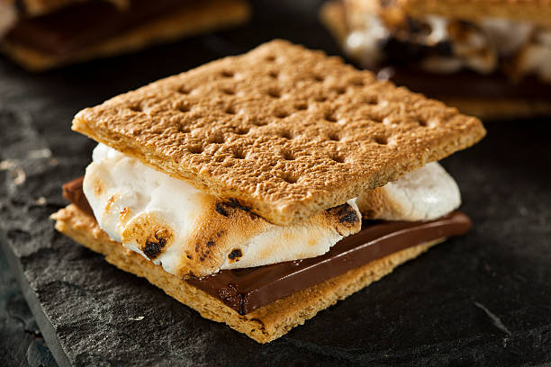

S'mores Recipe
Everyone loves spending sometime around the campfire. Even when you dont actively go out of your way to trail into
the wilderness every now and then, I am sure you may find yourself at a bonfire or two. Well this recipe is sure to
help increase the amount of fun spent in front of an open flame (safely of course). S'mores are a tasty sweet treat that
provides so much fun to make, with very little hassle. Don't worry if you live in an apartment style home either. You can
still have this decilious snack with only having to use the stove top, which means - no pans!
List of Ingridents
- 2 full graham crakcers sheets
- 2 jumbo marshmellows
- 1 whole milk chocolate Hershey bar
- 4 wooden skewer sticks
Steps
- Skewer the marshmellows with the wooden skewer sticks
- over an open flame, toast the mashmellow till your liking
- Once the mashmellow is toasted, break in half both graham cracker sheets
- Place each marshmellow on two of the half sheets
- Break the Hershey bar in half and place each half on top of both marshmellows
- Place the remaining two halves of graham cracker sheets on top of both s'mores
- Allow the chocolate to melt, then serve
Home Page